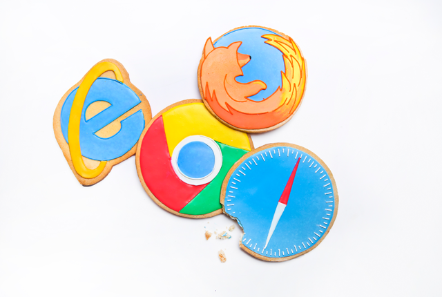

Cookies -:
When you browse the web , you need to know that some of the websites that you visit could be storing
your web usuage patterns and other personal information in small pieces of software which are called
cookies .

Cookies are data sent from a websites and stored in a user's web browser while a user is browsing a websites .
These cookies contain your personal information and allow the websites company to build a profile of sites
that you visit over time .
They do this to gather information about a particular population buying the product which can be sold to other
companies . There is a risk to the privacy of your information in allowing your browser to accept cookies .
Guarding your Privacy From Cookies -:
Do not allow your browser to store cookies and clear cookies from your computer manually from time to
time . If you are using Internet Explorer in order to disable cookies , follow the steps given below -:
1. Open Internet Explorer by clicking the start button and then clicking Internet Explorer .
2. Click the Tools button , and then click Internet Option .
3. Click the privacy tab , Under settings , move the slider to the top to block all cookies , and then click OK .

Remember
Blocking cookies might prevents some web pages from displaying correctly .
 Cyber Threads
Protection of your Computer
Personal Information
Social Engineering
Cyber Safety
Cyber Threads
Protection of your Computer
Personal Information
Social Engineering
Cyber Safety